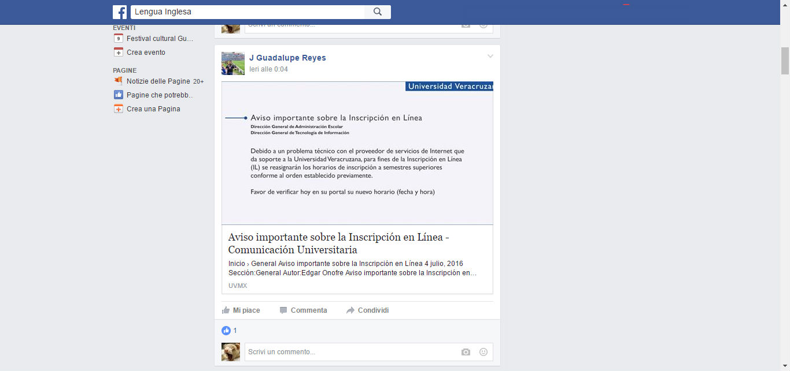

Luzio es la mascota oficial de la Universidad Veracruzana.
Luzio suele publicar recordatorios sobre las inscripciones, links de eventos y cursos y avisos importantes. Además, resuelve dudas sobre el funcionamiento de algunos trámites y suele remitir a las instancias correspondientes cuando no cuenta con la información que se le pregunta.
Éste es el grupo oficial de la carrera en Lengua Inglesa. Es un grupo cerrado y todos los miembros son académicos, alumnos o ex-alumnos.
En este grupo se publican anuncios importantes de la facultad, la universidad y a menudo de la situación del estado.
Los alumnos también utilizan este grupo para aplicar encuestas de clases, hacer preguntas, vender libros, informar sobre cuartos o departamentos en renta y anunciar eventos como obras de teatro, exposiciones y proyecciones de películas, entre otros.

También suelen publicarse ofertas de trabajo y de servicio social.
Ésta es la página de la Facultad.
Aquí también se publican eventos en la ciudad de Xalapa, además de noticias sobre la facultad y la universidad, recordatorios y links útiles.

Ésta es la página del Departamento de Lenguas Extranjeras.

Aquí se publican las fechas de inscripción para cursar una lengua adicional como italiano, japonés, alemán, francés, portugués o chino mandarín. También se publican las fechas para los exámenes de ubicación.

Ésta es la página de la rectora de la Universidad Veracruzana.

Además de noticias y comunicados sobre la UV, también se confirman en esta página todo tipo de suspensiones.

Este es el sitio de la coordinación de tutorías de la carrera
En la sección de transferencias y Equivalencias podemos ver las equivalencias de los exámenes de certificación que permiten acreditar las materias de Inglés I e Inglés II.
En la sección de Formatos puedes encontrar la retícula curricular, donde se listan las materias del programa de Lengua Inglesa, los créditos que otorga cada una y la proyección de qué materias se toman (idealmente) en cada semestre.

Después de iniciar sesión en Mi UV, haz clic en la sección Guía del estudiante

Una vez dentro de la Guía del estudiante, si se hace clic en Modelo educativo, en la parte de Proyección puedes encontrar información sobre tu promedio ponderado, cuántos periodos y créditos has obtenido hasta el momento, y aproximadamente en cuánto tiempo egresarás.
Si das clic en la sección Becas y programas podrás ver las becas y programas para las que eres un posible candidato.
Este es el sitio del catálogo virtual del sistema bibliotecario de la Universidad Veracruzana
Este>Se pueden realizar búsquedas por carrera, autor, ISBN, tipo de publicación, etc. Con este recurso, sabrás si está disponible el libro o documento que necesitar antes de trasladarte a la biblioteca para revisarlo.
Sitios de interés
- Página de la UV
Haz clic en cualquiera de las siguientes miniaturas para ver las imágenes y descripciones de los sitios.


Haz clic en cualquiera de las siguientes miniaturas para ver las imágenes y descripciones de los sitios.